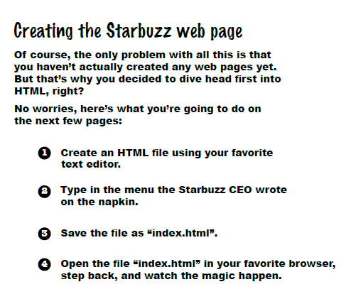
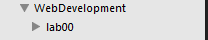
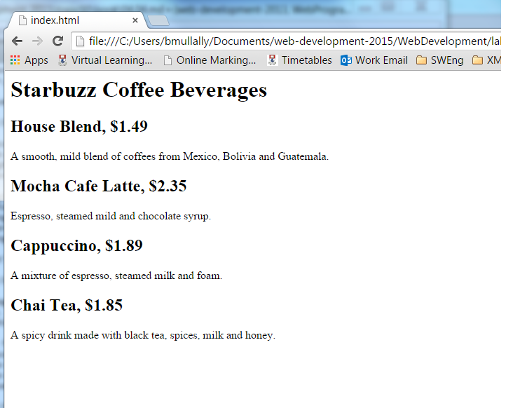
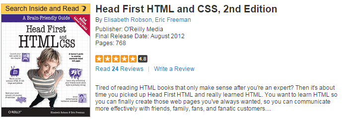

Objectives
editor · files · text · tags · browser · reference
Setup
Make sure you download and install Sublime Text 3 from
Select the appropriate download for your laptop (OS, Windows, Linux)

Tips and Hints
When creating web pages we will use Sublime as the editor tool. It is like notepad but has nicer features.
On the left hand side of the editor you can see the folder you are working in and all the files in that folder, similar to what you see in windows explorer or Mac Finder. For example I have created a folder with two files contained in that folder, each of those files is shown indented and below the folder name. For each file you will also see its extension. For example .html

The main editing window in sublime is where you will write code for the webpages.
Once you click on a file it will appear in the editor window, it will show blank if it is empty or you will see the code you have written.


It is important to regularly save your work, this might seem obvious but everyone looses work at some point in the semester and you'd be surprised how many say "I just forgot to save it!"
In sublime if you go to close your files it will prompt you to see if you want to save your work, however better practice is to always save after first creating a new file so that you name it correctly and then as you edit your code you should continually save your work.
Introduction Project
You will create a simple web page for it Starbuzz Coffee shop. They have made a name for itself as the fastest growing coffee shop around. If you’ve seen one on your local corner, look across the street—you’ll see another one. In fact, they’ve grown so quickly, they haven’t even managed to put up a web page yet…and therein lies your big break: By chance, while buying your Starbuzz Chai Tea, you run into the Starbuzz CEO… who asks for your help...

These are the steps you will carry out:

To prepare we will create a folder structure to store our work.
If you are working on a pc in the IT lab, create a new folder on either your G drive or on your usb drive, name the folder WebDevelopment, inside that folder create another folder called Lab00.
First on the list of tasks is to create a html file in our favourite text editor.
Open Sublime and choose Open Folder from the File menu. Navigate to the WebDevelopment folder that you just created and click OK.
In sublime click on the WebDevelopment folder, you should see the La00 folder appear.

You will be creating a new folder for each weekly lab you work on in this semseter.
Chose New File from the File menu, a new blank page should appear in the sublime window. When you open a new file you must tell Sublime what you want to name it. Click Save on the File menu and name the file index.html, save it into the Lab00 folder. You should see the file name appear in the left panel in sublime.

Second on the list of tasks we type in the menu that the CEO provided to us on the napkin.
To do this we click on the index.html file we just created and the blank page appears in sublime. In that page we type the following:
Starbuzz Coffee Beverages
House Blend, $1.49
A smooth, mild blend of coffees from Mexico, Bolivia and Guatemala.
Mocha Cafe Latte, $2.35
Espresso, steamed mild and chocolate syrup.
Cappuccino, $1.89
A mixture of espresso, steamed milk and foam.
Chai Tea, $1.85
A spicy drink made with black tea, spices, milk and honey.Third on the list of tasks is to save the file. Click on the File menu in Sublime and choose Save.
Your file in sublime should look like this:

Web Browser
For this module we will be using Google's Chrome as our chosen Web Browser, it should be on all pc's in the IT building and if you are using your laptop you can download it here
Open your Chrome web browser, it should be on the desktop or in the programs menu.
To open a file in Chrome you press Ctrl+o , this is the shortcut using the letter 'o' for Open. An Open dialog box appears, using this you navigate to your Web Development folder, go to the Lab00 folder and click on the index.html file. Click Open.
Your web page in the Chrome browser should look like this:

Success! you have got the page loaded in the browser, although the results are a little..uh..unsatisfying. But that's just because all you've done so far is go through the mechanics of creating a page and viewing it in the browser. So far you have only typed the content of the web page.
HTML gives you a way to tell the browser about the structure of your page. What's structure? It is a way of marking up your text so that the browser knows what's a heading, what text is a paragraph, what text is a subheading and so on. Once the browser knows a little about the structure, it can display your page in a more meaningful and readable manner.
So let's add some structure:

The tags shown in the image above are used to place structure to the content we typed. So we want to identify which content is a heading, which is a subheading and which is a paragraph.
If we first identify the heading, it is clearly the first line in our content. Starbuzz Coffee Beverages. Next a subheading could be House Blend, or Mocha Cafe Latte and so on. Next a paragraph could be A smooth, mild blend of coffees from Mexico, Bolivia and Guatemala.

Using the tags we surround each piece of content with an opening tag \
Save your work in Sublime, click on File and Save.
Now lets open/refresh our web page in Chrome.
If you closed Chrome since you viewed your web page then open it again, press Ctrl+o and choose the index.html file again.
If you still have the index.html file open in Chrome then simply press the refresh button on Chrome or press F5 (Windows)

It is nice to be able to see you html code in sublime and see the web browser window at the same time. You can do this by spliting your screen. In Windows while you have the sublime window open press the Windows button and the left hand arrow button on the keyboard. This will move the sublime window to the left hand side of your screen. Now go to the Chrome page and press the Windows button and the right hand arrow button on the keyboard. This will put the Chrome window to the right half of your screen. Something like this:

More HTML
You now have an HTML file with markup - does that make a web page? Almost.
You will be introduced to the following tags in the lectures
<html> <head> <title> and <body>
For the moment we need to use these tags to make this a proper HTML page...
The content we have included so far should all be contained within the open <body> tag and the close </body> tag.
We must add a little extra into the <head> and <title> tags

Save your work in Sublime, click on File and Save.
Your index.html code should look like this:

Now refresh the Chrome browser to see the changes.

You can see the title of the tab in Chrome now says Starbuzz Coffee
Congratulations you have now completed your first web page.
Queries and Questions
There is a lot to take in and become familiar with while learning web development. You will always have questions, please do ask your tutor, there is never a stupid question.
For additional support you can use the Internet although there are so many sites the ones we recommend are:
The book we recommend is:
Head First HTML and CSS, 2nd Edition by Elisabeth Freeman & Eric Freeman published by O'Reilly Media, August 2012.
Print ISBN:978-0-596-15990-0 | ISBN 10:0-596-15990-0 Ebook ISBN:978-1-4493-2448-3 | ISBN 10:1-4493-2448-7

Available to buy on Amazon.co.uk for £24.15
The book is an excellent support for this module, each week the lectures and labs utilise the chapters in the book. We strongly recommend you buying this book.
Some typical questions that you might have after completing this lab are as follows:


If you have any queries please do ask your tutor.
Exercise 1:
Explore this reference site here:
In particular, locate the <tags> you have used in this lab in the Element Reference section:
For examples this is the <p> element:
The text is very technical - but some of it will start to make sense over the next few weeks.
Exercise 2:
At the end of this page:
is a See Also section, which suggests two elements:
<hr><br>
Look up these in the reference, and try them out on the page you have designed.